Cobertura territorial
Cartera georreferenciada
Distrito
Ubicación
Mapa cartográfico detallado
Ubicación en Perú

PRECIPITACIÓN HOY
Preparando pronóstico horario.
--:--
LigeraExtrema
Pronóstico de precipitación de hoy. Animación horaria. Fuente meteorológica: Open-Meteo.